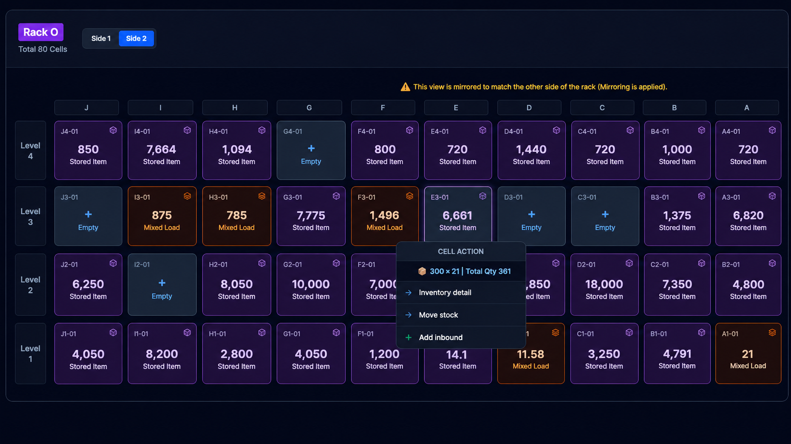
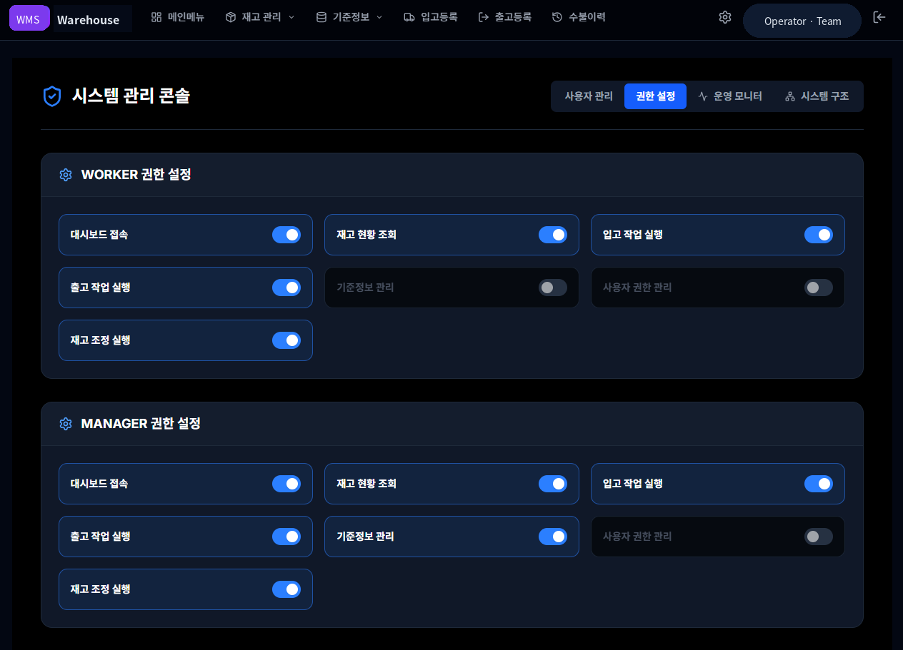
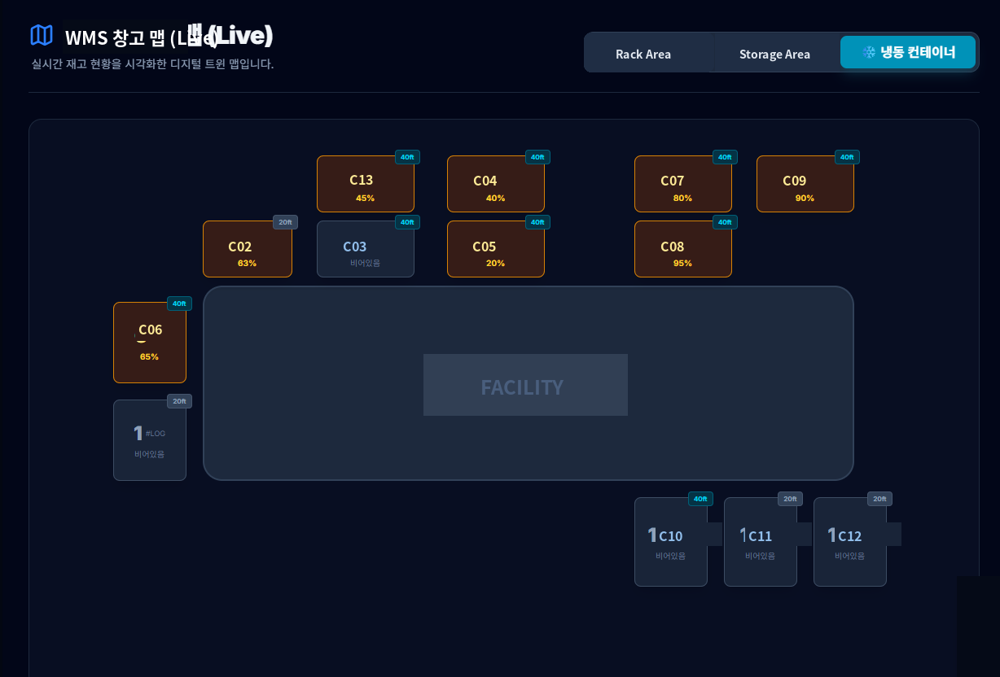
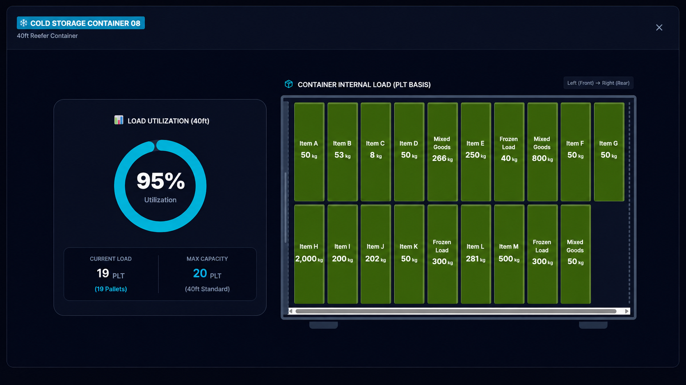
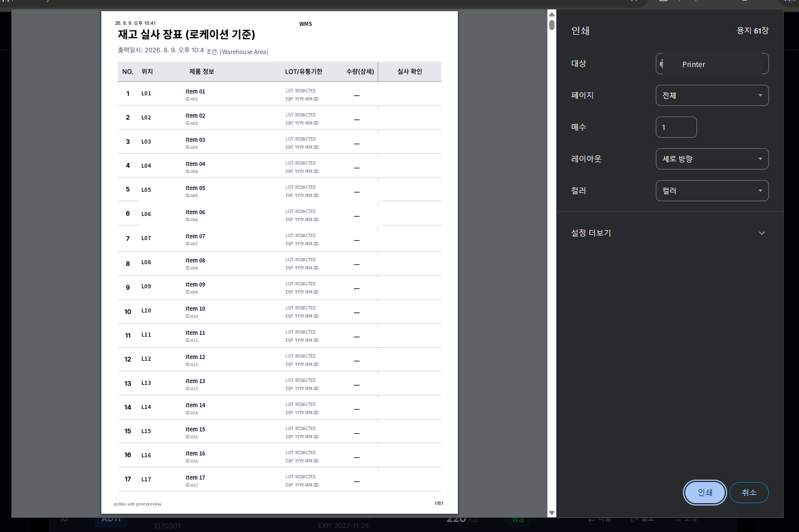

WMS-001 / L2 SHOWCASE
THE SYSTEMIN OPERATION.
PHYSICAL WAREHOUSE → DIGITAL OPERATING MODEL
실제 운영 화면을 따라가며
물리 창고가 어떻게 위치·수불·권한·검증 구조로 연결됐는지 보여줍니다.
01 / PHYSICAL → DIGITAL
THE WAREHOUSE
BECAME A MAP.
창고의 물리 랙과 저장 구조를 관리 가능한 digital location model로 표현했습니다.
위치와 점유 상태를 작업자가 한 화면에서 읽을 수 있는 구조로 연결했습니다.
 VIEW ORIGINAL-SIZE ASSET ↗
VIEW ORIGINAL-SIZE ASSET ↗
02 / LOCATION IDENTITY
DIGITAL LOCATION
HAD TO EXIST PHYSICALLY.
관리된 location identity를 QR와 rack card를 통해 실제 창고 위치에 다시 연결했습니다.

Managed location identity → physical rack-card · QR-based physical-digital interface.

데이터베이스 좌표가 아니라 작업자가 실제 랙을 바라보는 방향을 기준으로 화면 표현을 조정한 engineering concept입니다. Raw operational evidence가 아닙니다.
03 / OPERATION
MOVEMENT
BECAME RECORD.
입고·이동·출고와 같은 현장 변화가 시스템 transaction으로 축적되고 운영 이력으로 남는 구조입니다.

04 / CONTROL
AN OPERATING SYSTEM
NEEDS CONTROL.
복수 사용자가 같은 시스템을 사용하되, 역할에 따라 접근 가능한 기능을 구분하는 role / feature permission 구조를 적용했습니다.

05 / TOPOLOGY
NOT EVERY STORAGE SPACE
LOOKS LIKE A RACK.
WMS의 공간 모델은 일반 랙 하나만을 전제로 하지 않습니다.
서로 다른 저장 구조를 각 물리적 특성에 맞게 digital topology로 표현할 수 있도록 확장됐습니다.

Heterogeneous storage topology · container-based storage representation · utilization visualization.

Container internal loading model 설명용 representation입니다. Actual stock state, exact operational quantity, or live utilization을 증명하지 않습니다.
06 / CLOSED LOOP
DIGITAL INVENTORY
RETURNS TO THE FLOOR.
디지털 재고는 화면 안에서 끝나지 않습니다.
실사 출력과 현장 확인, 필요한 조정·정합성 확인을 통해 다시 물리 창고와 연결됩니다.

SYNTHESIS
ONE WAREHOUSE.
ONE OPERATING MODEL.
WMS-001의 핵심은 기능 수가 아니라, 물리 창고의 상태를 하나의 운영 모델 안에서 계속 연결하고 기록할 수 있게 만든 것입니다.
L2 CLAIM BOUNDARY
IMPLEMENTED CAPABILITY.
NOT QUANTIFIED IMPACT.
These visuals show implemented operational capability. They do not establish quantified ROI, time saving, labor reduction, or inventory-accuracy improvement.
NEXT DEPTH
SHOWCASE PROMOTED.
DOSSIER PROMOTED.
L3 WMS-SPECIFIC DOSSIER PROMOTED